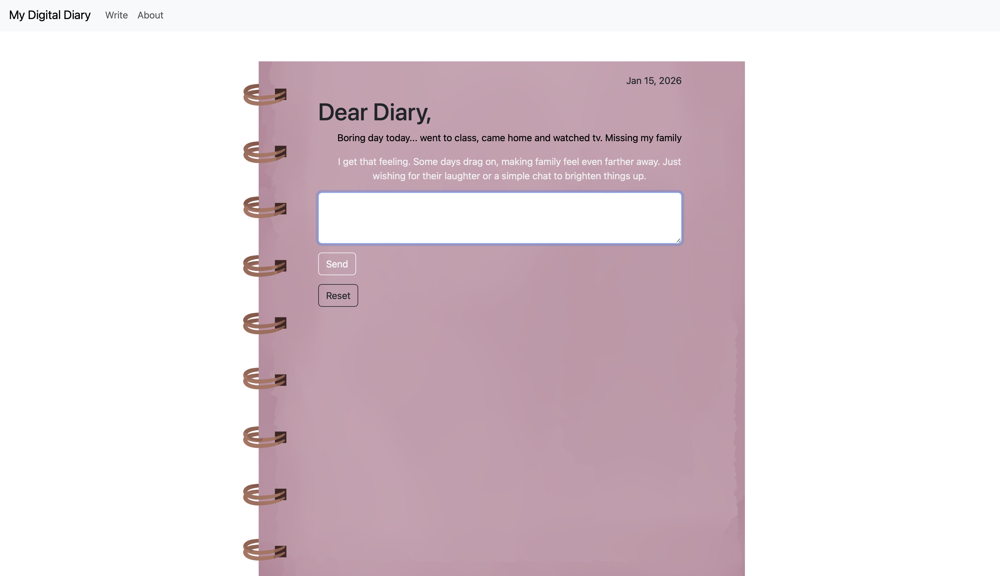

MY DIGITAL DIARY
TRY ITPython · Flask · HTML · CSS · OpenAI API
An interactive diary, built as a multi-page website. The project explores how AI-driven interactions can feel more personal and reflective rather than automated.
Key Features
- Multi-page interactive web interface
- User input handling and form submission
- API integration with OpenAI
- Visual layout and background design

